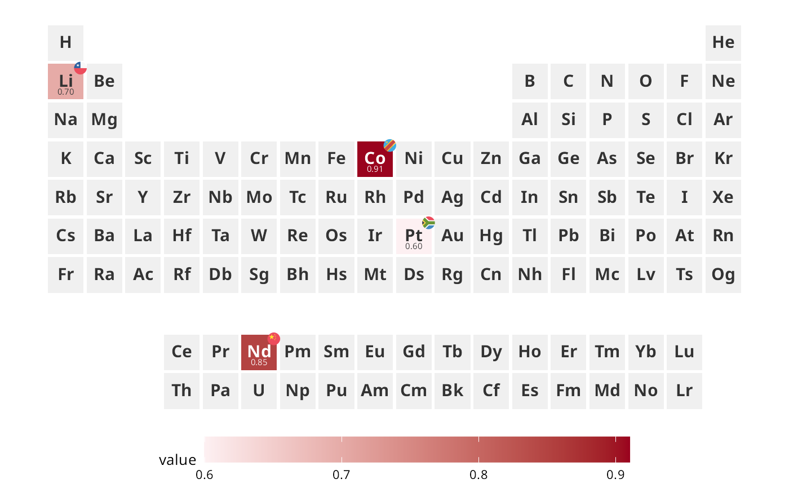

Adds country flags (via ggflags) or ISO 3166-1 alpha-2 country code
text labels to element tiles. When show_legend = TRUE, a separate
legend strip showing each country's flag and full name is appended using
patchwork.
Usage
ggPSE_badge(
plot = NULL,
data,
symbol_col = "symbol",
country_col = "country",
badge_size = NULL,
hierarchy = FALSE,
hierarchy_scale = c(1, 0.7, 0.5),
show_legend = FALSE,
legend_position = c("right", "left", "bottom", "top"),
legend_size = 0.15,
legend_flag_size = 5,
legend_text_size = 9,
base_size = NULL,
x_anchor = 0.38,
y_anchor = 0.35,
flag_spacing = 0.38,
badge_color = "#333333"
)Arguments
- plot
A ggplot object. If NULL a blank table is created.
- data
A data frame with element symbols and country codes.
- symbol_col
Character. Column containing element symbols. Default "symbol".
- country_col
Character. Column containing ISO 3166-1 alpha-2 codes. Default "country".
- badge_size
Numeric. Flag or text badge size. Default 3.5 for flags.
- hierarchy
Logical. Scale flags by order - first country largest. Default
FALSE.- hierarchy_scale
Numeric vector of length 3. Scale factors for 1st, 2nd, 3rd flag. Default
c(1.0, 0.70, 0.50).- show_legend
Logical. Append a country legend. Requires patchwork. Default
FALSE.- legend_position
Character.
"right"(default),"left","bottom", or"top".- legend_size
Numeric. Relative size of legend vs main plot. Default
0.15.- legend_flag_size
Numeric. Flag size in the legend. Default
5.- legend_text_size
Numeric. Text size in the legend. Default
9.- base_size
Numeric. Base font size. Default NULL.
- x_anchor
Numeric. Horizontal position of rightmost flag. Default 0.38.
- y_anchor
Numeric. Vertical position of flags. Default 0.35.
- flag_spacing
Numeric. Spacing between flags. Default 0.38.
- badge_color
Character. Text color for fallback badges. Default "#333333".
Examples
supply <- data.frame(
symbol = c("Li", "Co", "Nd", "Pt"),
country = c("CL", "CD", "CN", "ZA"),
value = c(0.70, 0.91, 0.85, 0.60)
)
ggPSE(supply, value_col = "value") |>
ggPSE_badge(supply, country_col = "country")

if (FALSE) { # \dontrun{
ggPSE(supply, value_col = "value") |>
ggPSE_badge(supply, country_col = "country", show_legend = TRUE)
} # }